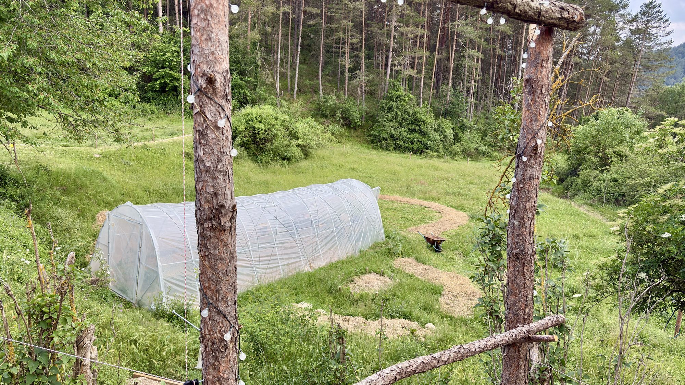

Projecte rural · Castellar del Riu
Cal Niu és un espai rural on creixen la cultura, la bioconstrucció, la permacultura i les ganes de fer comunitat.



Tornem a habitar el món rural des de la cura: per la terra, per les persones i pels sabers que es transmeten fent.
Tècniques amb terra, palla, fusta i calç per construir de manera sana i sostenible.
Veure els tallersDisseny de sistemes, hort ecològic, compostatge i sobirania alimentària.
Queda't una temporada: aprèn fent, treballa la terra i forma part del dia a dia de la casa.
Saber-ne mésConcerts, cinema a la fresca, exposicions i trobades que donen vida al territori.
L'última cosa
Vine a un taller, queda't de voluntari/a o porta la teva pròpia idea.